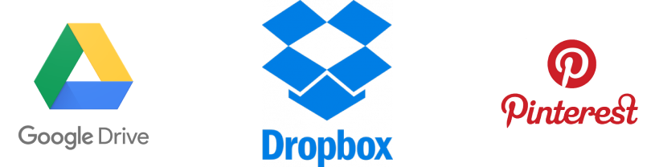

gather
Re-envisioning Cloud Storage with a focus on organization. Desktop Prototype | Mobile Prototype
Introduction
summary
Gather is a cloud storage solution that gathers all your data, links and notes in one location and offers simplified, yet powerful organizational capabilities.
Desktop Prototype | Mobile Prototype
My role: UX Research, UX Design, Visual Design, Branding.
Deliverables: User Surveys, Competitive Analysis, User Personas, User Stories & Flows, Wireframes, Usability Testing, High Fidelity Mockups, More Testing, Prototype, More testing. Lots of Testing!
Tools Used: Figma, Photoshop, Illustrator, InVision, UsabilityHub, Draw.io, Pen & Paper.
The Problem
Come up with an idea for a new cloud storage service to target an untapped market.
Research indicated that most people already use cloud storage services, with the vast majority using more than just one. How to find an untapped market then?
My research exposed two main frustrations with currently available options:
- Needing more than one application (for different kinds of data.)
- As functionalities increase, organization plummets.
The problem: how to increase and consolidate functionalities, while improving organization?
The Solution
Create an app that takes the basic functionalities of the most commonly used apps and combine them into one option for all kinds of data!
Gather offers storage for all file types (docs, links, notes, etc..) with advanced sharing capabilities that allow for “publishing” data publicly .
There is also the capability to organize data into “projects” without changing their stored location.
Document “snapshots” address the desire for version control.
My Process
user research
In order to gain better insight into user behavior, preferences and frustrations, I conducted an online survey utilizing google forms.
Though this survey was mostly instended to gain insight into general usage, I also proposed some of the features I had been originally envisioning and it emerged that these features weren’t really a priority.
It seemed users wanted to resolve frustrations with current options more than they wanted new features.
User Survey Insights:
More detailed analysis from my survey can be found: here
Competitive analysis
After performing some initial broad research, I narrowed the competitors that I wanted to analyze more closely down to Google Drive, Pinterest and Dropbox.

Results of my analysis:
Google Drive: dominates the cloud storage landscape. It offers a lot of functionality especially for creating content. Though it seems to have a minimal interface, with very few design elements, the interface is very cluttered and confusing with way too much going on. Moreover, users tend to use separate applications, like Kep for notetaking and Photos for images. These types of data are not integrated with the other content. Also, organization and display of data are not intuitive.
Dropbox: focuses on uploading and storing content. Though they recently introduced Paper, to compete with Google’s content creation functionalities, they are known for storage and better organization. While dropbox has a far more intuitive interface and organization system, it doesn’t have the added functionality that Google offers and it’s quite expensive if you want to add more than a minimal amount of content.
Pinterest: differs from Google Drive and Dropbox in that its focus is on linking to “found” content. It is used primarily for bookmarking images on websites, to be used for inspiration and reference. It has limited organizational capabilities and doesn’t offer storage solutions for uploaded files or content creation.
More detailed analysis from my competitive and SWOT analysis can be found: here
personas
From my analysis, three types of users emerged:
- Tech savvy users, who want advanced organization, communication and sharing capabilities
- Social media savvy users (though not necessarily tech savvy) who want one app to handle all types of data, communication, media and ideas.
- The busy professional who is generally not tech savvy, but likes technology that is easy to use and makes life simpler and less complicated.
Persona #1: Steve - programmer "I don't want to have to talk to anyone"
Motivations -
He currently uses Google Drive and Keep for both work and home. He does a lot of collaboration with co-workers, but not in person if he can help it. He would like better collaboration capabilities like group sharing.
Frustrations -
Can’t easily tell what files are shared with who. Hates having to interact with people to ask them to do something related to a shared file or folder. Can’t easily give notes or comments.
Persona #2: Kendall - blogger “I have way too many apps and don’t know what is where”
Motivations -
She currently uses Google Drive, dropbox, keep, pinterest, pocket and evernote both professionally and personally. There is a lot of overlap between her personal and professional life and she needs to access everything from everywhere. She wants all her data in one place and ORGANIZED!
Frustrations -
She hates having to jump between platforms to find files or share with people or the public. Most of the apps she uses have a very confusing interface. She can’t easily tell what she has shared with who and who has access to what.
Persona #3: Jennifer - professor “I wish I had an administrator at home”

Motivations -
She uses Google Drive, Dropbox and Apple iCloud for both work and home. Collaboration is an important feature for her professionally and personally for her joint household. She loves having an administrator at work who keeps everything organized and would like some project management functionality for her household.
Frustrations -
Her personal documents are unorganized and all over the place. She just doesn’t have time to keep track of everything. Wishes everything were in one place and she had more controls over sharing and organizing.
user stories
With these personas in mind, I compiled a list of User Stories to determine the types of tasks that would be included in this product. High and medium priority tasks that define the minimum viable product (MVP) are:
- As a new user I want to
- create an account
- As a returning user I want to
- log in to my account
- As a general user I want to
- upload a file
- upload a folder
- create a new folder
- move a file to a folder
- save a link
- view my saved link
- search for a file
- create a new document/file
- share a file/folder with an indivdual/group
- see shared files
- organize my files into projects
- create tasks
- create notes/lists
- add a contact
- organize my contacts into groups
- control versioning of my data
Full list of user stories available: here
user flows
Based on my low and high priority user stories, I created user flows for the MVP. Starting with sketches:
and moved on to draw.io for final flows: